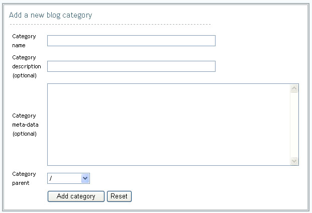

|
Individuals with privileges to author blog content, maintain blog properties or settings will be given access to the Blog administration console. From the administration console, you will be able to access features for managing blog properties, adding categories, creating and editing blog entries and uploading files. |
Setting Blog Properties To manage the settings of your blog:
|
Managing Categories Blog categories define the structure and organization for blog entries and make finding information easier for end users. To add a blog category:
|

To edit a blog category:
To delete a blog category: